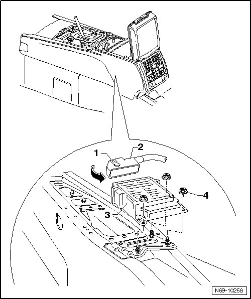

Air Bag Control Module: Service and Repair
Airbag Control Module
Removing
CAUTION!
Observe safety precautions for working on airbags --> [ Airbag Safety Precautions ] Technician Safety Information.
- Disconnect batteries.
- Remove center console storage compartment --> [ Center Console Storage Compartment ] Center Console Storage Compartment.
- Remove shifter cover --> [ Shifter Cover ] Shifter Cover
- Swivel the locking lever - 1 - away from the connector - 2 - - arrow - and remove the connector from the control module - 3 -.
- Remove three nuts - 4 - (9 Nm).
- Remove the control module from the vehicle.

Installing
- Perform the steps used for removal in reverse order.
- Switch on ignition.
CAUTION!
Make sure that no persons are in the vehicle.
- Connect battery.
- If the control unit was replaced, it must be coded. Adapting components (coding) --> [ Airbag Components, Adapting ] Programming and Relearning